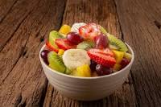

Salada de Frutas
Salada de fruta com aveia é uma otima opção para dias quentes e ainda consegue dar uma grande energia

ingredientes
- 5 morangos
- 1/2 manga
- 1 colher de sopa de mel
- 2 kiwi
- 2 colheres de aveia
Instruçãoi
- Corte todas as frutas em fatias ou cubos pequenos
- Coloque as frutas, avei e mel em um reciente